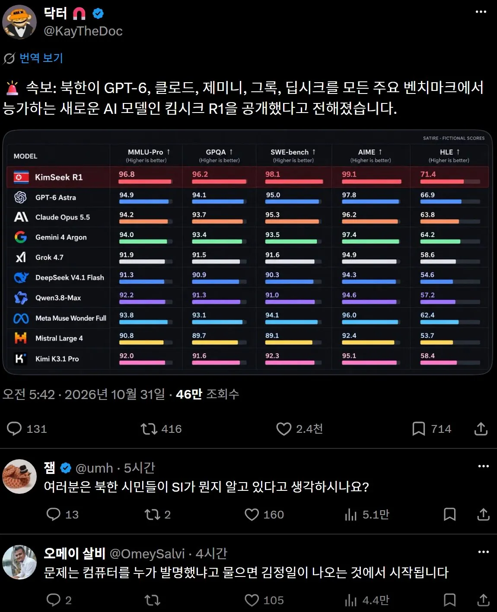

와… 동무, **정곡을 찔렀구만 기래!**

와… 동무, **정곡을 찔렀구만 기래!**
신뢰성이 아니라 북한 해커들이라는 뜻임.
아아.. 그럼 맞다
존나 실력자들이니까
그냥 드립임
제미나이의 뒤를 잊는 **애미나이**를 출시해버렸지비
. 토큰은 납탄 한발 ㄷㄷ
U-seek
애들 밥 훔쳐먹는거 ㅅㅂㅋㅋㅋ
니보라우 린공지능 애미나이동무 고조 남사시러운 야짤이나 만들어보라
짤 개웃기네 ㅋㅋㅋㅋㅋㅋㅋ

저거 해킹한 북한놈은 북한에서 융숭한 대접받을라나?
?? : 3일 주갓어
프롬프트 엔지니어링 ㅋㅋㅋ
나라가 거대한 쌀숭이 ㄷㄷ
aemin-aiㄷㄷ
애민 ㄷㄷㄷ
애초에 신뢰성이 있는 자료긴 한가